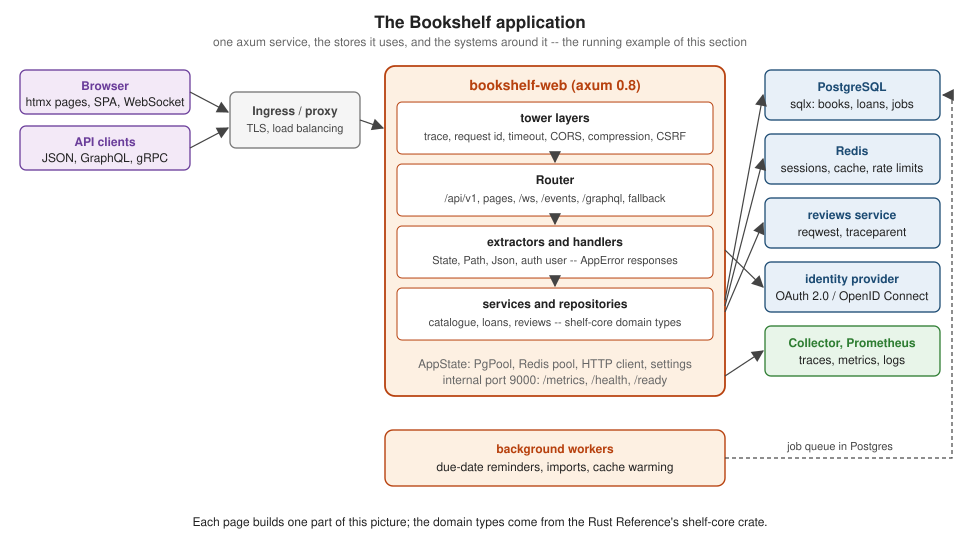

Axum
|
This content was generated with the assistance of AI and should be verified against the official documentation before being relied on in production. |
This section is written against axum 0.8.9 (released 2026-04-14), with axum-core 0.5.6, axum-extra 0.12.6, tokio 1.53,
tower 0.5, tower-http 0.7 and hyper 1, on Rust 1.99 (edition 2024), checked on 2026-10-06. axum itself needs Rust 1.80
or later. There is no axum 0.9 or 1.0 release yet; the breaking changes already queued for 0.9 on the main branch are
mentioned as upcoming where they matter, and examples follow the axum-v0.8.9 tag of the repository.
What axum is
axum is a web framework from the Tokio project. It routes HTTP requests to plain async functions, turns request parts
into typed arguments through extractors, and turns return values into responses through IntoResponse — without
macros. It has no middleware system of its own: every router, handler and layer is a tower Service, so the whole
tower and tower-http ecosystem (timeouts, compression, tracing, CORS, rate limits) applies, and the same middleware
works with tonic, hyper and AWS Lambda. Underneath, hyper speaks HTTP/1.1 and HTTP/2 and Tokio runs the tasks.
The section is for developers who know some Rust — ownership, traits, async/await — and want to build production
services. Rust itself is covered in the Rust Reference; these pages link
there instead of repeating it.
What’s covered
Foundations — Introduction & Architecture, Tower Service Model, Getting Started and Project Structure.
Routing, handlers, extractors and responses — Routing, Routing Composition, Handlers, Extractors, Custom Extractors, axum-extra, Responses, Error Handling and State & Dependency Injection.
Middleware and HTTP concerns — Writing Middleware, Applying Middleware & Ordering, tower-http Catalog, Request Limits & Timeouts, CORS & Compression and Rate Limiting & Load Shedding.
Building APIs — JSON REST APIs, Validation, OpenAPI with utoipa, Forms & Content Negotiation and GraphQL & gRPC.
Security — Sessions & Cookies, Password Authentication, JWT & Bearer Tokens, OAuth2 & OpenID Connect, Authorization, CSRF & Security Hardening and TLS & HTTPS.
Web UI and real-time — Server-side Templates, htmx, Static Files & SPAs, WebSockets, Server-Sent Events & Streaming, File Uploads and Full-stack with Leptos & Dioxus.
Operations — Background Jobs & Tasks, HTTP Clients & Proxies, Graceful Shutdown, Configuration, Logging & Tracing, OpenTelemetry & Distributed Tracing, Metrics & SLOs, Testing, Performance Tuning and Deployment.
Reference — Migration & Framework Comparison.
Quick reference — Cheat Sheet, with a one-page downloadable PDF.
Reading path
-
Introduction & Architecture and Getting Started — the stack and a first service
-
Routing, Handlers and Extractors — the request side
-
Responses and Error Handling — the response side
-
State & Dependency Injection and Tower Service Model — how the pieces fit
-
JSON REST APIs and Databases with sqlx — a first real API
-
Then the security, web UI and operations groups below in any order; finish with Testing and Deployment.
Coming from axum 0.6 or 0.7, or from another framework? Start with Migration & Framework Comparison.
Running example

Every page builds part of Bookshelf, an original library application: a catalogue of books and authors, loans with
due dates, reviews, user accounts, an HTML front end with htmx, live updates over WebSockets and SSE, and the operational
pieces of a real service. Its domain types (Book, Isbn, Loan) come from the shelf-core crate of the Rust
Reference, so the same code sits behind a command-line tool there and behind an HTTP API here.
Related material on this site
| Topic | Where |
|---|---|
Rust language, async/await, tokio, serde, error handling |
|
OAuth 2.0, OpenID Connect and JWT in depth |
|
CORS in the browser |
|
Container images and Compose |
|
Running services in a cluster |
|
SQL and PostgreSQL |
|
Redis data structures and operations |
|
GraphQL schemas, resolvers and clients |
|
Prometheus, PromQL and alerting |
|
MCP servers and AI agents in Rust (the rmcp SDK, Rig) |
Model Context Protocol (MCP) and The 2026 Agent Frameworks Landscape |
Other backend frameworks (FastAPI, NestJS, Spring Boot, ASP.NET Core, Laravel) |
A comparison of backend and web frameworks across languages is planned (issue #263).
Bibliography
Books
-
Indo Yoon (technical reviewer Joshua Mo), Beginning Axum: Learning Modern Web Development With Rust, 1st edition. Apress, 2026. ISBN 979-8-8688-2630-6 (print), 979-8-8688-2631-3 (eBook), DOI 10.1007/979-8-8688-2631-3. Publisher page; companion code and chat application.
-
Manjunath Gangappa and Rajkumar Rangaraj (foreword by Trask Stalnaker), Mastering Distributed Observability in Rust: Implement OpenTelemetry in a real-world, multi-container e-commerce architecture, 1st edition. Packt, 2026 (June). ISBN 978-1-80667-179-3 (print); eBook ISBN 978-1-80667-178-6 as given by retailer listings. Publisher page; companion code.
-
Nouman Azam, Advanced Rust: Exploring Power Features of Rust for Intermediate and Advanced Developers, 1st edition (technical reviewer Yogendra Sharma). Apress, 2026. ISBN 979-8-8688-2991-8 (print), 979-8-8688-2992-5 (eBook), DOI 10.1007/979-8-8688-2992-5. Publisher page. Chapter 2 (debugging and tracing) was used for this section.
-
Ethan Crossley, Hayden Van Der Post and Alice Schwartz (credited inconsistently), Rust for Scientific Computing: Numerical Methods, Simulations, and Linear Algebra. Reactive Publishing, 2026. No ISBN is printed; retailers list the paperback as 979-8-19849-392-6. Publisher site. Consulted for topic coverage only: no facts or code were taken from it. Its chapter 15 web-service example is cited only where it shows outdated axum code (
axum::Server,AddExtensionLayer,/:idroutes).
The books are consulted references, not the primary source. On any discrepancy, and wherever a book is silent on a later feature, the official documentation wins; where a book shows an outdated form, the pages say so in prose (collected on Migration & Framework Comparison).
axum, Tokio, tower and hyper
-
axum 0.8.9 API documentation, axum-core, axum-extra and axum-macros
-
axum examples (axum-v0.8.9), CHANGELOG and ECOSYSTEM.md (at the tag)
-
Tokio tutorial, Graceful Shutdown, Getting started with Tracing, tokio, tokio-util, futures 0.3.34 and tokio-console
-
tower, tower-http 0.7.1 (CHANGELOG), hyper, hyper-util and http-body-util, hyper 1.12.0 API, matchit 0.8.4 and headers 0.4.2
-
Tokio blog: Inventing the Service trait and console-subscriber 0.5.0
-
The Rust Programming Language and the Async Book, through the Rust Reference
-
The Cargo Book, The Rust Reference, the standard library documentation, the Rust compiler error index and The Rust Performance Book
Crates and services used on the pages
-
Serialization, validation and errors: serde (attributes), validator, garde, thiserror, anyhow, serde_json 1.0.151
-
OpenAPI: utoipa, utoipa-axum, utoipa-swagger-ui, aide, utoipa CHANGELOG, and client generators OpenAPI Generator and progenitor
-
Data: sqlx (API), SeaORM, Diesel and diesel-async, redis-rs, deadpool-redis, moka
-
ORMs: sea-orm 2.0.4, sea-orm-migration 2.0.4, sea-query 1.0.2, SeaORM CHANGELOG and diesel 2.3.13; databases: PostgreSQL 16 documentation and Redis documentation
-
Authentication: tower-sessions, axum-login, argon2 and password-hash, jsonwebtoken, oauth2, openidconnect, tower-sessions repository, tower-sessions-redis-store 0.16.0, jsonwebtoken CHANGELOG, argon2 CHANGELOG, oauth2 upgrade guide, GitHub: Authorizing OAuth apps and secrecy 0.10.3
-
Templates and front end: askama and askama_web, minijinja, maud, htmx, Leptos, Dioxus, askama 0.16.1 API, maud 0.27.0 API, htmx reference, htmx examples: Active Search and Inline Validation, the htmx SSE and WebSocket extensions, leptos 0.8.22, leptos_axum 0.8.10, cargo-leptos, dioxus 0.7.10, Vite: Building for production and Project Fluent
-
Traffic and serving: tower_governor, governor 0.10.4, axum-server, rustls 0.23.45, tokio-rustls 0.26.6, Let’s Encrypt documentation, reqwest, reqwest-middleware, reqwest-retry 0.9.1 and reqwest-tracing 0.7.1
-
Observability: tracing, tracing-subscriber, OpenTelemetry Rust, tracing-opentelemetry, opentelemetry-otlp, metrics, metrics-exporter-prometheus, opentelemetry_sdk 0.33.0, opentelemetry-http 0.33.0, opentelemetry-rust repository, OpenTelemetry: Sampling, OpenTelemetry semantic conventions and Prometheus: Metric and label naming
-
Performance: mimalloc 0.1.52, tikv-jemallocator 0.7.0, cargo-flamegraph, samply, oha and k6
-
Testing and jobs: axum-test, insta (docs), cargo-nextest, mockall 0.15.0, Pact, testcontainers-modules, tokio-cron-scheduler, apalis
-
GraphQL and gRPC: async-graphql (API 7.2.1, async-graphql-axum 7.2.1), tonic (repository, tonic-prost-build 0.14.6) and gRPC: Core concepts
-
Configuration: config, figment, dotenvy, envy 0.4.2
-
Development loop: bacon and listenfd 1.0.2
-
Supply chain: cargo-deny, cargo-audit and the RustSec advisory database
-
Deployment: cargo-chef, AWS Lambda Rust runtime, cargo-lambda, Fly.io (fly.toml), Shuttle, lambda_http 1.3.1, distroless, Docker Hub: rust
-
Containers and orchestration: Docker Dockerfile reference, build secrets, cache optimisation and docker container stop; Kubernetes Pod Lifecycle, Container Lifecycle Hooks, probes and Secrets; systemd systemd.kill and systemd.service
-
Services: Jaeger, Prometheus, Grafana (Tempo), OpenTelemetry Collector
Specifications and standards
-
RFC 9110: HTTP Semantics, RFC 9111: HTTP Caching, RFC 9113: HTTP/2, RFC 3986: URI, RFC 6265: Cookies
-
RFC 6455: The WebSocket Protocol, RFC 8441: WebSockets with HTTP/2 and WHATWG: Server-sent events
-
RFC 9457: Problem Details, RFC 7519: JWT, RFC 6749: OAuth 2.0, RFC 7636: PKCE, OpenID Connect Core 1.0 and WHATWG Fetch: CORS
-
RFC 6266: Content-Disposition, RFC 6585: Additional HTTP Status Codes, RFC 6750: Bearer Token Usage, RFC 7239: Forwarded HTTP Extension, RFC 7301: ALPN, RFC 7517: JSON Web Key, RFC 7578: multipart/form-data, RFC 8446: TLS 1.3, RFC 8594: Sunset Header, RFC 8725: JWT Best Current Practices, RFC 9106: Argon2, RFC 9700: OAuth 2.0 Security Best Current Practice and RFC 9745: Deprecation Header
-
WHATWG HTML: URL-encoded form data, W3C Server Timing, JSON Lines and the NDJSON specification
-
GraphQL specification and the Protocol Buffers proto3 language guide
-
OWASP Top 10:2025 (project page), OWASP API Security Top 10 (2023) and the OWASP Cheat Sheet Series: Password Storage, Session Management, CSRF Prevention, REST Security, Input Validation and Logging, Authentication, Authorization, XSS Prevention, File Upload, HTTP Headers, JSON Web Token, Secrets Management, SSRF Prevention and WebSocket Security
-
MDN: HTTP (including Content Security Policy)
Articles and guides
-
Google SRE Book: Service Level Objectives and The Site Reliability Workbook: Alerting on SLOs
-
Filippo Valsorda, Cross-Site Request Forgery (the design behind Go’s CrossOriginProtection and tower-http’s
CsrfLayer) -
Alice Ryhl, Async: What is blocking?
-
Luca Palmieri, 5x Faster Rust Docker Builds with cargo-chef